Proposition d’architecture technique · Entrepôt de données de santé multi-sites
Extraire, standardiser et documenter des données cliniques hétérogènes sans perdre leur sens, leur provenance ni leurs états d’absence.
Un même DPI équipe plusieurs centaines d’établissements. Chacun
configure ses formulaires, libellés, listes de valeurs, unités,
conditions d’affichage, groupes répétés et documents. Une même
information clinique peut donc exister sous forme de colonne SQL,
EAV, QuestionnaireResponse FHIR, CDA, JSON/XML, texte
natif, PDF ou scan.
Thèse. La structure vient du moteur de formulaires, le sens vient de mappings revus, et la publication reste déterministe. Un élément inconnu est conservé et mis en quarantaine ; il n’est jamais deviné.
Vue cible

Préserver avant de standardiser
| Source | Traitement |
|---|---|
| Relationnel / EAV | Extraction SQL, schéma et parsing typé |
| Formulaires dynamiques | Hiérarchie, conditions, calculs et répétitions |
| FHIR R4 / CDA | Adaptateurs conformes, extensions ambiguës refusées |
| JSON / XML / HTML | Parsing sécurisé et références source exactes |
| PDF / scans | Texte natif d’abord ; OCR local si pertinent |
| Cycle de vie | Brouillon, signé, corrigé, annulé, supprimé |
Une réponse négative, un champ vide et un champ masqué ne sont
jamais réduits au même null.

| Brut | Objets immuables, manifestes et checksums |
| Canonique | Parquet borné, source sémantique sans perte |
| Contrôle | PostgreSQL : mappings, jobs, audit et catalogue |
| Recherche | OMOP 5.4 + tables distinctes de release et lignage |
Connaissance revue, exécution exacte

Ni similarité floue, ni embedding, ni réponse de LLM ne décide au runtime.
Identité source, domaine et concept cible, version du vocabulaire, valeurs locales, conversions d’unités bornées, règles d’absence/négation, comportement conditionnel et répété, reviewers maker/checker, vecteurs de test, checksum et signature détachée.
Le langage de transformation est déclaratif et limité à une liste blanche. Aucun code fourni par un utilisateur n’est évalué.
Correction et rejeu. Une règle corrigée crée une nouvelle release de mapping, puis une nouvelle release de recherche. Les sorties antérieures ne sont ni réécrites ni supprimées.
Chemin optionnel, preuves obligatoires

Principe de sobriété. Inventorier et dédupliquer avant d’extraire. Traiter uniquement les classes documentaires et périodes nécessaires aux variables de recherche approuvées.
Texte : « Allergie à la pénicilline avec urticaire. » substance : Penicillin assertion : PRESENT réaction : Urticaria méthode : CDA_RULES_OR_NLP preuve : document_482 / p.2 / 144–189 release : clinical_text_2026_04
| Cas d’usage | Méthode privilégiée |
|---|---|
| Découverte de schéma | Métadonnées et parsing déterministe |
| Valeurs connues / unités | Dictionnaires exacts et conversions UCUM bornées |
| Scan image | PaddleOCR auto-hébergé, CPU puis GPU si mesuré |
| Sections et tableaux | Règles, puis modèle de layout spécialisé si nécessaire |
| Négation / incertitude | Règles déterministes ou classifieur validé |
| Entités cliniques | Dictionnaires, puis NER spécialisé |
| Candidats de mapping | Recherche terminologique et classement lexical |
| Anomalies de qualité | Contrôles déterministes et suivi statistique |
Chaque candidat conserve document, page, section, texte ou coordonnées, méthode, version d’image et de modèle, confiance et statut de validation. Une faible confiance provoque l’abstention.
Un index vectoriel n’est ni le stockage documentaire ni une dépendance de publication. Un LLM éventuellement hébergé en France aide la revue mais ne publie aucun fait.
Publier ou expliquer le refus
| Niveau | Contrôles |
|---|---|
| Technique | Comptages, checksums, doublons, lots absents |
| Structurel | Types, identifiants, hiérarchie, groupes répétés appariés |
| Sémantique | Mapping signé, concepts, valeurs locales, unités |
| Clinique | Plages plausibles, combinaisons et ordre temporel |
| Provenance | Source, mapping, règles, vocabulaire et modèle |
| OMOP | Domaine concept, clés, dates et conformité 5.4 |
| Scientifique | Couverture, données manquantes, biais et limites |
Par établissement et période : disponibilité, population éligible, complétion, couverture utilisable, états manquants, taux de quarantaine, couverture du mapping, distributions, démographie, spécialité et contexte de soins.
Pour le NLP, conserver au moins un site ou une famille de formulaire hors entraînement et tester les modèles sur des gabarits jamais vus.
Découvrabilité pour la recherche
Responsabilités distinctes. Le Parquet canonique reste la source sémantique sans perte. OMOP est une projection de recherche immuable. L’appartenance à une release et le lignage vivent dans des tables dédiées, sans colonne propriétaire ajoutée aux tables OMOP.
Sans dénominateur reconstituable, publier des nombres observés et non une couverture populationnelle.
Définition et vocabulaire, sites contributeurs, périodes, sources, méthode, statut du mapping, volumes patient/séjour, complétion, couverture, qualité, dernier rafraîchissement, limites et release OMOP.
| Site | Disponible | Complétion | Utilisable | Méthode | Statut |
|---|---|---|---|---|---|
| A | Oui | 87 % | 84 % | Formulaire | Validé |
| B | Oui | Non calculable | Comptages | Règles CDA | Limité |
| C | Non | N/A | 0 % | Aucune source | Absent |
| D | Partiel | 62 % | 55 % | Structuré + NLP | Surveillé |
Si les données individuelles ne peuvent pas sortir, le même package est exécuté localement. Le site exporte uniquement un bundle agrégé signé, avec suppression des petites cellules. Identifiants patient et lignes de réponse sont interdits par schéma et par tests.
Industrialiser par preuves successives
Une base de code, configuration par site, conteneurs, lots bornés, ingestion idempotente, recherche de tâches avec bail, rejeu contrôlé, releases immuables, sauvegarde/restauration et télémétrie corrélée.
| Dérive sémantique | Double empreinte, tests et maker/checker |
| Publication erronée | Abstention, quarantaine et preuves obligatoires |
| Biais inter-sites | Métriques par site/période et limites publiées |
| Exposition de données | Pseudonymisation locale, moindre privilège, chiffrement, audit |
| Dépendance ML | Chemin déterministe par défaut et adapters isolés |
| Non-reproductibilité | Manifestes, checksums, versions et signatures |
Critères initiaux. Chaque fait publié possède une preuve et un mapping released ; une version inconnue ne publie rien ; négatif et manquant restent distincts ; les corrections gardent l’historique ; les comptages se réconcilient ; les échecs sont explicites ; la couverture est visible par site et période ; aucune donnée clinique n’est envoyée à un service d’IA externe.